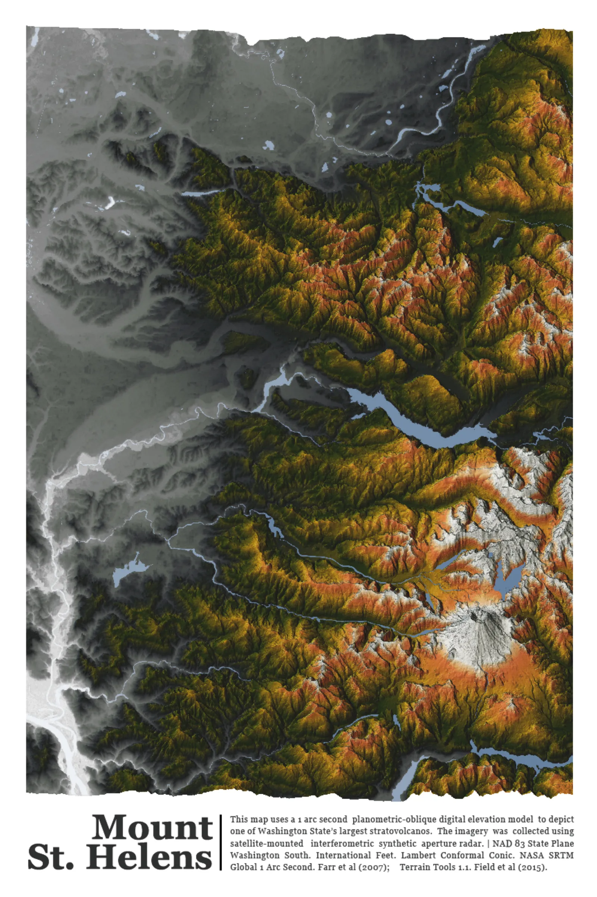
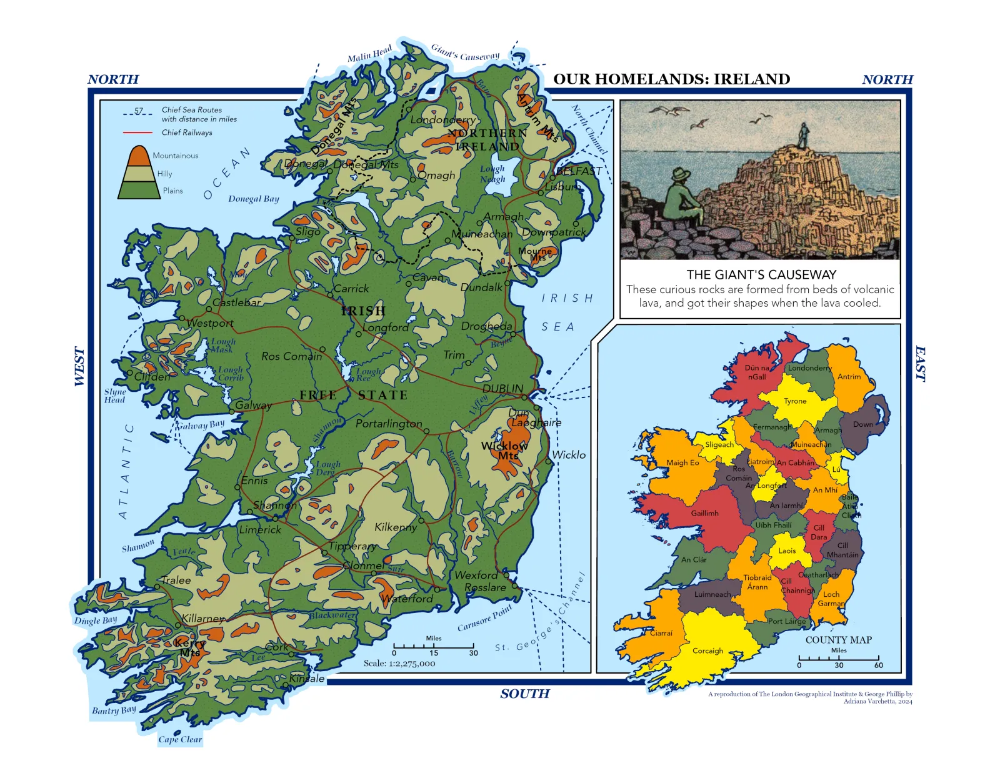
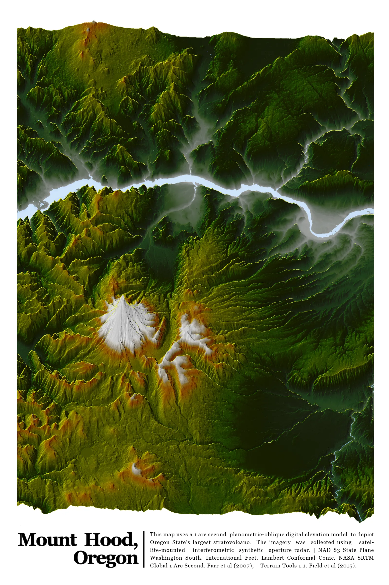
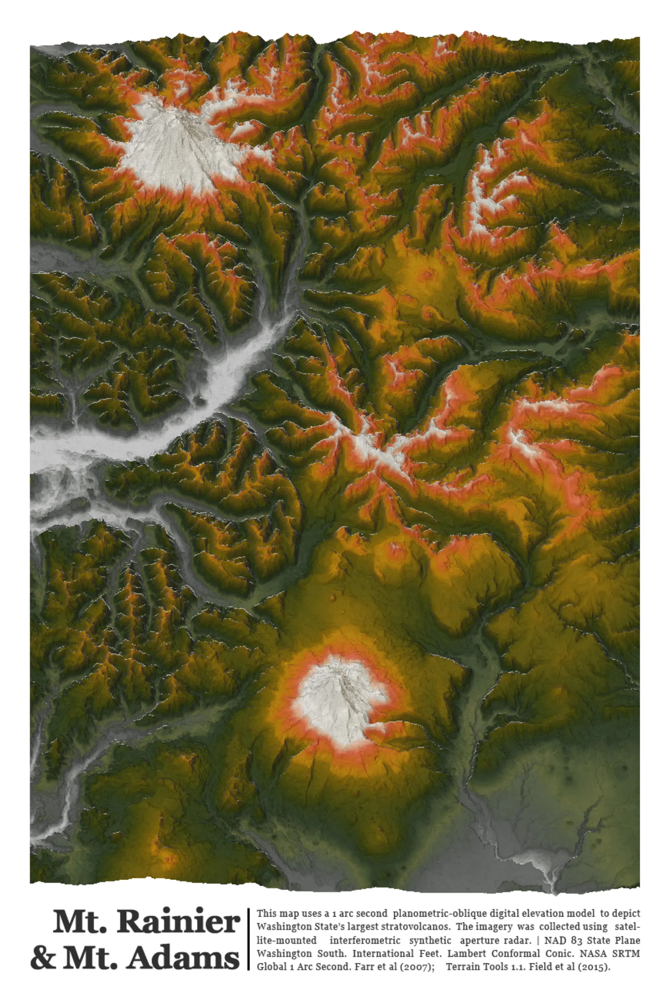

Mount St. Helens: Planometric-oblique shaded relief using 1 arc-second SRTM DEM, styled in ArcGIS Pro with custom color ramp.

Scotland: Regionally focused relief and political hybrid map designed for visual clarity and thematic emphasis.

Salish Sea Bioregional Sanctuary: Conceptual regional map advocating watershed-based governance and conservation.

Ireland (Reproduction): Vintage-style educational map designed in QGIS with historical symbology and color palette.

Mt. Hood: Stylized shaded relief representation with high contrast DEM layering and terrain-focused visualization.

South Cascades: High-resolution shaded relief map highlighting the region's volcanic and glacial terrain features.